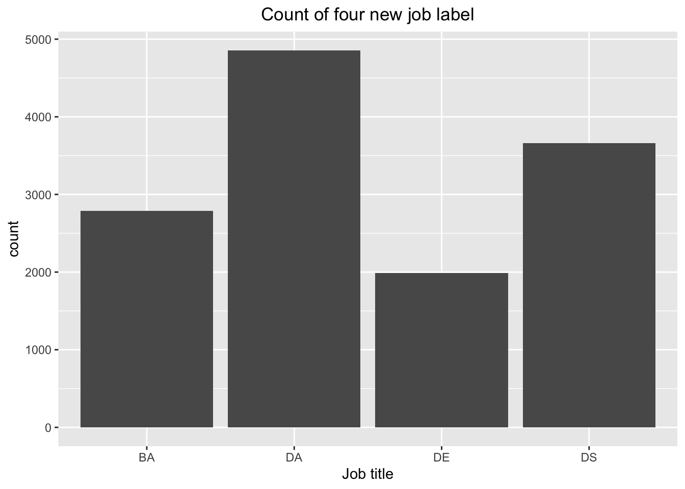
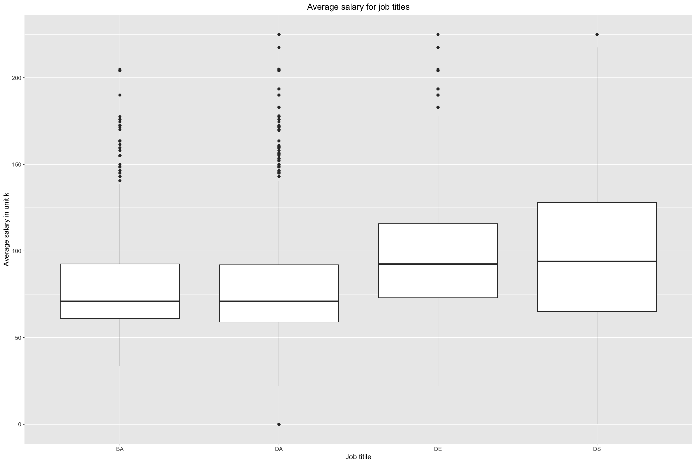
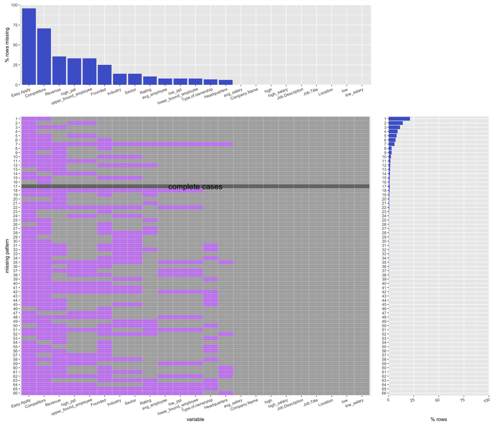
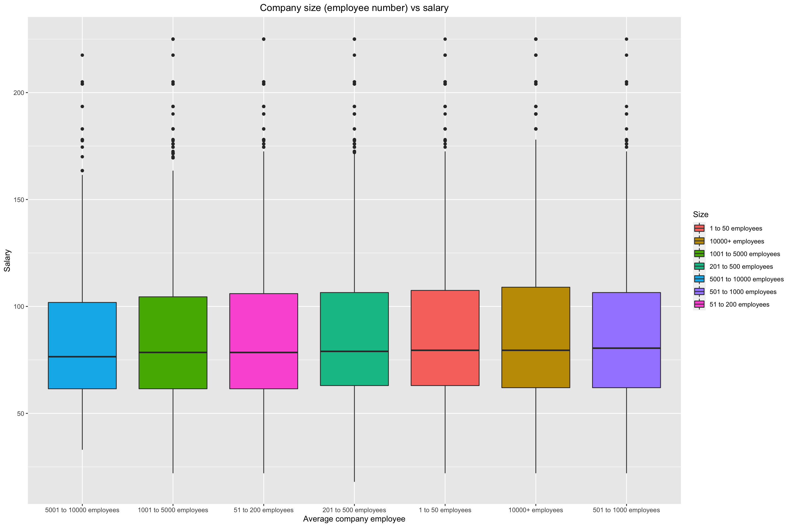

Chapter 4 Missing values
4.1 load data & preprocess data
- replace -1, Unknown/ Non-Applicable to NA
- convert 'Salary Estimate' to col: low_salary, high_salary, avg_salary
- convert 'employee' to col: lower_bound_employee, upper_bound_employee, avg_employee
## # A tibble: 6 × 23
## `Job Title` low high `Job Description` Rating `Company Name` Location
## <chr> <chr> <chr> <chr> <dbl> <chr> <chr>
## 1 Senior Data… $111K $181K… "ABOUT HOPPER\n\nA… 3.5 "Hopper\n3.5" New Yor…
## 2 Data Scient… $111K $181K… "At Noom, we use s… 4.5 "Noom US\n4.5" New Yor…
## 3 Data Scienc… $111K $181K… "Decode_M\n\nhttps… NA "Decode_M" New Yor…
## 4 Data Analyst $111K $181K… "Sapphire Digital … 3.4 "Sapphire Dig… Lyndhur…
## 5 Director, D… $111K $181K… "Director, Data Sc… 3.4 "United Enter… New Yor…
## 6 Data Scient… $111K $181K… "Job Brief\n\nThe … 2.9 "IFG Companie… New Yor…
## # … with 16 more variables: Headquarters <chr>, low_ppl <chr>,
## # high_ppl <chr>, Founded <int>, Type of ownership <chr>, Industry <chr>,
## # Sector <chr>, Revenue <chr>, Competitors <chr>, Easy Apply <chr>,
## # low_salary <dbl>, high_salary <dbl>, avg_salary <dbl>,
## # lower_bound_employee <dbl>, upper_bound_employee <dbl>,
## # avg_employee <dbl>4.2 missing value by column:
## Easy Apply Competitors Revenue
## 3745 2760 1392
## high_ppl upper_bound_employee Founded
## 1299 1299 977
## Industry Sector Rating
## 546 546 409
## low_ppl lower_bound_employee avg_employee
## 306 306 306
## Type of ownership Headquarters Job Title
## 267 240 0
## low high Job Description
## 0 0 0
## Company Name Location low_salary
## 0 0 0
## high_salary avg_salary
## 0 04.3 choose first ten company

4.4 use mi library draw heatmap and check missing value
x <- mi::missing_data.frame(ds_data %>% as.data.frame())## NOTE: The following pairs of variables appear to have the same missingness pattern.
## Please verify whether they are in fact logically distinct variables.
## [,1] [,2]
## [1,] "low_ppl" "lower_bound_employee"
## [2,] "low_ppl" "avg_employee"
## [3,] "high_ppl" "upper_bound_employee"
## [4,] "Industry" "Sector"
## [5,] "lower_bound_employee" "avg_employee"image(x)
show patterns of missing value
## [1] "nothing"
## [2] "Revenue"
## [3] "Competitors"
## [4] "Founded"
## [5] "Revenue, Competitors"
## [6] "high_ppl, upper_bound_employee"
## [7] "Founded, Competitors"
## [8] "Rating, Competitors"
## [9] "Industry, Sector"
## [10] "Type.of.ownership, Competitors"
## [11] "Founded, Revenue"
## [12] "high_ppl, Competitors, upper_bound_employee"
## [13] "Founded, Revenue, Competitors"
## [14] "Rating, Revenue, Competitors"
## [15] "Rating, Founded, Competitors"
## [16] "high_ppl, Revenue, upper_bound_employee"
## [17] "Type.of.ownership, Revenue, Competitors"
## [18] "high_ppl, Founded, upper_bound_employee"
## [19] "Founded, Type.of.ownership, Competitors"
## [20] "Industry, Sector, Competitors"
## [21] "high_ppl, Revenue, Competitors, upper_bound_employee"
## [22] "Industry, Sector, Revenue, Competitors"
## [23] "high_ppl, Industry, Sector, upper_bound_employee"
## [24] "Founded, Industry, Sector, Competitors"
## [25] "Rating, Founded, Revenue, Competitors"
## [26] "Rating, Industry, Sector, Competitors"
## [27] "high_ppl, Founded, Competitors, upper_bound_employee"
## [28] "Type.of.ownership, Industry, Sector, Competitors"
## [29] "Founded, Type.of.ownership, Revenue, Competitors"
## [30] "Headquarters, Founded, Revenue, Competitors"
## [31] "high_ppl, Founded, Revenue, upper_bound_employee"
## [32] "Founded, Industry, Sector, Revenue, Competitors"
## [33] "Rating, Founded, Industry, Sector, Competitors"
## [34] "high_ppl, Founded, Revenue, Competitors, upper_bound_employee"
## [35] "Founded, Type.of.ownership, Industry, Sector, Competitors"
## [36] "Type.of.ownership, Industry, Sector, Revenue, Competitors"
## [37] "Rating, Founded, Industry, Sector, Revenue, Competitors"
## [38] "Founded, Type.of.ownership, Industry, Sector, Revenue, Competitors"
## [39] "Headquarters, Founded, Industry, Sector, Revenue, Competitors"
## [40] "Rating, Founded, Type.of.ownership, Industry, Sector, Competitors"
## [41] "low_ppl, high_ppl, Revenue, lower_bound_employee, upper_bound_employee, avg_employee"
## [42] "Rating, Founded, Type.of.ownership, Industry, Sector, Revenue, Competitors"
## [43] "low_ppl, high_ppl, Revenue, Competitors, lower_bound_employee, upper_bound_employee, avg_employee"
## [44] "high_ppl, Founded, Industry, Sector, Revenue, Competitors, upper_bound_employee"
## [45] "low_ppl, high_ppl, Founded, Competitors, lower_bound_employee, upper_bound_employee, avg_employee"
## [46] "Rating, Headquarters, Founded, Industry, Sector, Revenue, Competitors"
## [47] "low_ppl, high_ppl, Founded, Revenue, Competitors, lower_bound_employee, upper_bound_employee, avg_employee"
## [48] "high_ppl, Founded, Type.of.ownership, Industry, Sector, Revenue, Competitors, upper_bound_employee"
## [49] "Rating, low_ppl, high_ppl, Founded, Revenue, Competitors, lower_bound_employee, upper_bound_employee, avg_employee"
## [50] "Headquarters, low_ppl, high_ppl, Founded, Revenue, Competitors, lower_bound_employee, upper_bound_employee, avg_employee"
## [51] "Rating, low_ppl, high_ppl, Type.of.ownership, Revenue, Competitors, lower_bound_employee, upper_bound_employee, avg_employee"
## [52] "low_ppl, high_ppl, Founded, Industry, Sector, Revenue, Competitors, lower_bound_employee, upper_bound_employee, avg_employee"
## [53] "Rating, low_ppl, high_ppl, Founded, Industry, Sector, Revenue, Competitors, lower_bound_employee, upper_bound_employee, avg_employee"
## [54] "Headquarters, low_ppl, high_ppl, Founded, Industry, Sector, Revenue, Competitors, lower_bound_employee, upper_bound_employee, avg_employee"
## [55] "low_ppl, high_ppl, Founded, Type.of.ownership, Industry, Sector, Revenue, Competitors, lower_bound_employee, upper_bound_employee, avg_employee"
## [56] "Rating, Headquarters, low_ppl, high_ppl, Founded, Industry, Sector, Revenue, Competitors, lower_bound_employee, upper_bound_employee, avg_employee"
## [57] "Rating, low_ppl, high_ppl, Founded, Type.of.ownership, Industry, Sector, Revenue, Competitors, lower_bound_employee, upper_bound_employee, avg_employee"
## [58] "Rating, Headquarters, low_ppl, high_ppl, Founded, Type.of.ownership, Industry, Sector, Revenue, Competitors, lower_bound_employee, upper_bound_employee, avg_employee"## nothing
## 385
## Revenue
## 135
## Competitors
## 868
## Founded
## 14
## Revenue, Competitors
## 500
## high_ppl, upper_bound_employee
## 550
## Founded, Competitors
## 280
## Rating, Competitors
## 10
## Industry, Sector
## 6
## Type.of.ownership, Competitors
## 2
## Founded, Revenue
## 1
## high_ppl, Competitors, upper_bound_employee
## 307
## Founded, Revenue, Competitors
## 116
## Rating, Revenue, Competitors
## 20
## Rating, Founded, Competitors
## 8
## high_ppl, Revenue, upper_bound_employee
## 44
## Type.of.ownership, Revenue, Competitors
## 3
## high_ppl, Founded, upper_bound_employee
## 2
## Founded, Type.of.ownership, Competitors
## 1
## Industry, Sector, Competitors
## 6
## high_ppl, Revenue, Competitors, upper_bound_employee
## 68
## Industry, Sector, Revenue, Competitors
## 5
## high_ppl, Industry, Sector, upper_bound_employee
## 10
## Founded, Industry, Sector, Competitors
## 42
## Rating, Founded, Revenue, Competitors
## 24
## Rating, Industry, Sector, Competitors
## 2
## high_ppl, Founded, Competitors, upper_bound_employee
## 4
## Type.of.ownership, Industry, Sector, Competitors
## 3
## Founded, Type.of.ownership, Revenue, Competitors
## 1
## Headquarters, Founded, Revenue, Competitors
## 1
## high_ppl, Founded, Revenue, upper_bound_employee
## 1
## Founded, Industry, Sector, Revenue, Competitors
## 86
## Rating, Founded, Industry, Sector, Competitors
## 7
## high_ppl, Founded, Revenue, Competitors, upper_bound_employee
## 3
## Founded, Type.of.ownership, Industry, Sector, Competitors
## 5
## Type.of.ownership, Industry, Sector, Revenue, Competitors
## 2
## Rating, Founded, Industry, Sector, Revenue, Competitors
## 59
## Founded, Type.of.ownership, Industry, Sector, Revenue, Competitors
## 6
## Headquarters, Founded, Industry, Sector, Revenue, Competitors
## 1
## Rating, Founded, Type.of.ownership, Industry, Sector, Competitors
## 1
## low_ppl, high_ppl, Revenue, lower_bound_employee, upper_bound_employee, avg_employee
## 1
## Rating, Founded, Type.of.ownership, Industry, Sector, Revenue, Competitors
## 8
## low_ppl, high_ppl, Revenue, Competitors, lower_bound_employee, upper_bound_employee, avg_employee
## 4
## high_ppl, Founded, Industry, Sector, Revenue, Competitors, upper_bound_employee
## 3
## low_ppl, high_ppl, Founded, Competitors, lower_bound_employee, upper_bound_employee, avg_employee
## 4
## Rating, Headquarters, Founded, Industry, Sector, Revenue, Competitors
## 2
## low_ppl, high_ppl, Founded, Revenue, Competitors, lower_bound_employee, upper_bound_employee, avg_employee
## 2
## high_ppl, Founded, Type.of.ownership, Industry, Sector, Revenue, Competitors, upper_bound_employee
## 1
## Rating, low_ppl, high_ppl, Founded, Revenue, Competitors, lower_bound_employee, upper_bound_employee, avg_employee
## 2
## Headquarters, low_ppl, high_ppl, Founded, Revenue, Competitors, lower_bound_employee, upper_bound_employee, avg_employee
## 1
## Rating, low_ppl, high_ppl, Type.of.ownership, Revenue, Competitors, lower_bound_employee, upper_bound_employee, avg_employee
## 1
## low_ppl, high_ppl, Founded, Industry, Sector, Revenue, Competitors, lower_bound_employee, upper_bound_employee, avg_employee
## 18
## Rating, low_ppl, high_ppl, Founded, Industry, Sector, Revenue, Competitors, lower_bound_employee, upper_bound_employee, avg_employee
## 34
## Headquarters, low_ppl, high_ppl, Founded, Industry, Sector, Revenue, Competitors, lower_bound_employee, upper_bound_employee, avg_employee
## 5
## low_ppl, high_ppl, Founded, Type.of.ownership, Industry, Sector, Revenue, Competitors, lower_bound_employee, upper_bound_employee, avg_employee
## 3
## Rating, Headquarters, low_ppl, high_ppl, Founded, Industry, Sector, Revenue, Competitors, lower_bound_employee, upper_bound_employee, avg_employee
## 1
## Rating, low_ppl, high_ppl, Founded, Type.of.ownership, Industry, Sector, Revenue, Competitors, lower_bound_employee, upper_bound_employee, avg_employee
## 1
## Rating, Headquarters, low_ppl, high_ppl, Founded, Type.of.ownership, Industry, Sector, Revenue, Competitors, lower_bound_employee, upper_bound_employee, avg_employee
## 2294.5 draw the missing pattern plot using the function from homework


The most frequent missing pattern is the pattern where Easy.apply and Competitors are both missing, while the other variables are not. Moreover, Easy.apply and Competitors are more likely to be missing in the dataset than the other variables.
While other values are missing, the values of Company.name, index, Job.Description, Job.Title, Location, Salary.Estimate, and X are all presenting in the dataset.
The features Industry and Sector seem to be missing at the same time.
The feature Founded seems to be an independent feature, its representing doesn't effect other feature’s status.
Complete cases only appears less than 100 rows while there are more than 2000 rows of data in the set.